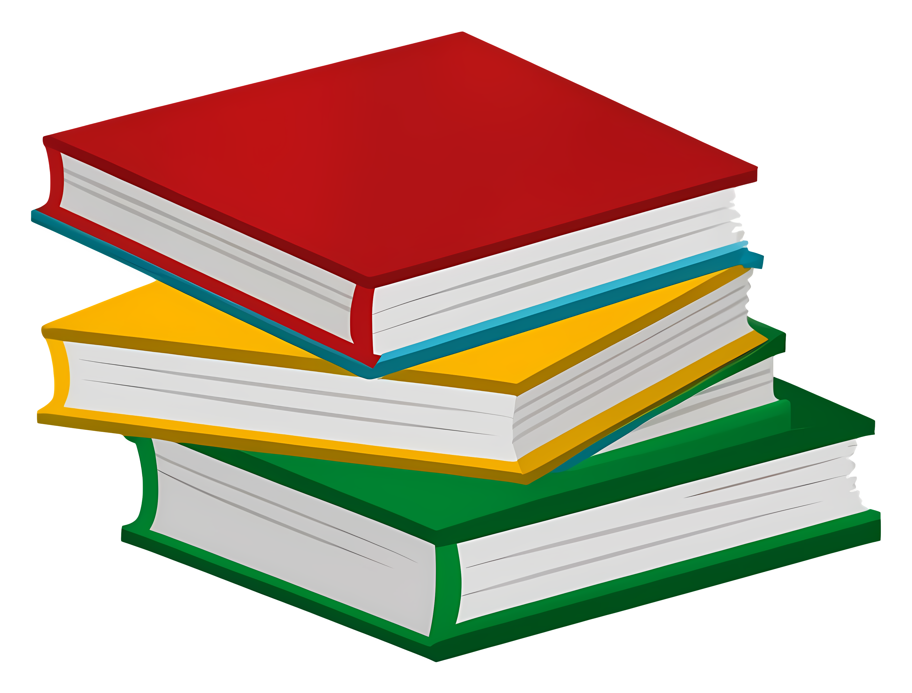

MATÉRIAS QUE DEVERIAM SER ENSINADAS NA ESCOLA

NUTRIÇÃO
No curso de Nutrição, o aluno estuda as necessidades físicas, biológicas e patológicas do corpo humano. Entende a relação das pessoas com os alimentos e as propriedades de cada um deles. Assim, ele percebe que só um alimento não cura ou auxilia o corpo humano.
PRIMEIROS SOCORROS
Primeiros Socorros são os cuidados iniciais que devem ser prestados rapidamente a uma pessoa, vítima de acidentes ou de mal súbito, cujo estado físico põe em perigo a sua vida, com o fim de manter as funções vitais e evitar o agravamento de suas condições, aplicando medidas e procedimentos até a chegada de assistência médica
EDUCAÇÃO FINANCEIRA
Educação financeira é o processo em que um indivíduo busca ou obtém conhecimento para lidar com o dinheiro de forma mais consciente e inteligente. A ideia é que o aprendizado seja convertido em práticas que levem a um uso mais comedido dos recursos financeiros, fazendo também com que ele leve à prosperidade.